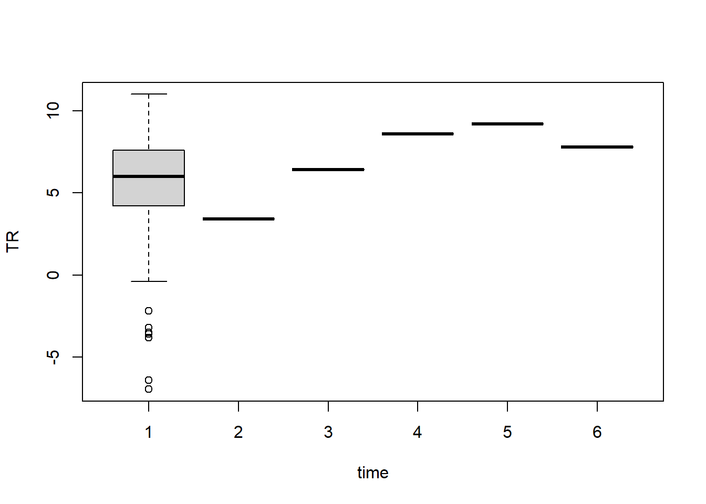

In longitudinal models, time is usually considered as a continuous variable.
It is common to examine - the fixed effects: what is the nature of the average trend (linear, quadratic)
the random effects: individual differences
In addition, these individual differences can be related to
time-invariant covariates (age, sex, …)
time-varying covariates (measured at each time point)
SEM can be closely related to ‘mixed models’ (linear mixed models, generalised mixed models) but requires balanced data. The ability of SEM is the addition of indirect paths and latent variables.
Warning in value[[jj]][ri] <- if (is.factor(xij)) as.vector(xij) else xij: le
nombre d'objets à remplacer n'est pas multiple de la taille du remplacement
Warning in value[[jj]][ri] <- if (is.factor(xij)) as.vector(xij) else xij: le
nombre d'objets à remplacer n'est pas multiple de la taille du remplacement
Warning in value[[jj]][ri] <- if (is.factor(xij)) as.vector(xij) else xij: le
nombre d'objets à remplacer n'est pas multiple de la taille du remplacement
Warning in value[[jj]][ri] <- if (is.factor(xij)) as.vector(xij) else xij: le
nombre d'objets à remplacer n'est pas multiple de la taille du remplacement
Warning in value[[jj]][ri] <- if (is.factor(xij)) as.vector(xij) else xij: le
nombre d'objets à remplacer n'est pas multiple de la taille du remplacement
Warning in value[[jj]][ri] <- if (is.factor(xij)) as.vector(xij) else xij: le
nombre d'objets à remplacer n'est pas multiple de la taille du remplacement
Warning in value[[jj]][ri] <- if (is.factor(xij)) as.vector(xij) else xij: le
nombre d'objets à remplacer n'est pas multiple de la taille du remplacement
Warning in value[[jj]][ri] <- if (is.factor(xij)) as.vector(xij) else xij: le
nombre d'objets à remplacer n'est pas multiple de la taille du remplacement
Warning in value[[jj]][ri] <- if (is.factor(xij)) as.vector(xij) else xij: le
nombre d'objets à remplacer n'est pas multiple de la taille du remplacement
Warning in value[[jj]][ri] <- if (is.factor(xij)) as.vector(xij) else xij: le
nombre d'objets à remplacer n'est pas multiple de la taille du remplacement
Warning in value[[jj]][ri] <- if (is.factor(xij)) as.vector(xij) else xij: le
nombre d'objets à remplacer n'est pas multiple de la taille du remplacement
Warning in value[[jj]][ri] <- if (is.factor(xij)) as.vector(xij) else xij: le
nombre d'objets à remplacer n'est pas multiple de la taille du remplacement
Warning in value[[jj]][ri] <- if (is.factor(xij)) as.vector(xij) else xij: le
nombre d'objets à remplacer n'est pas multiple de la taille du remplacement
Warning in value[[jj]][ri] <- if (is.factor(xij)) as.vector(xij) else xij: le
nombre d'objets à remplacer n'est pas multiple de la taille du remplacement
Warning in value[[jj]][ri] <- if (is.factor(xij)) as.vector(xij) else xij: le
nombre d'objets à remplacer n'est pas multiple de la taille du remplacement
Warning in value[[jj]][ri] <- if (is.factor(xij)) as.vector(xij) else xij: le
nombre d'objets à remplacer n'est pas multiple de la taille du remplacement
Warning in value[[jj]][ri] <- if (is.factor(xij)) as.vector(xij) else xij: le
nombre d'objets à remplacer n'est pas multiple de la taille du remplacement
Warning in value[[jj]][ri] <- if (is.factor(xij)) as.vector(xij) else xij: le
nombre d'objets à remplacer n'est pas multiple de la taille du remplacement
boxplot(TR~time,data=df_long)

fit1<-lmer(TR~1+(1|time),data=df_long,REML=F)
boundary (singular) fit: see help('isSingular')
summary(fit1)
Linear mixed model fit by maximum likelihood . t-tests use Satterthwaite's
method [lmerModLmerTest]
Formula: TR ~ 1 + (1 | time)
Data: df_long
AIC BIC logLik deviance df.resid
1108.9 1119.0 -551.4 1102.9 216
Scaled residuals:
Min 1Q Median 3Q Max
-4.1789 -0.4637 0.1360 0.6708 1.8020
Random effects:
Groups Name Variance Std.Dev.
time (Intercept) 0.000 0.000
Residual 9.007 3.001
Number of obs: 219, groups: time, 6
Fixed effects:
Estimate Std. Error df t value Pr(>|t|)
(Intercept) 5.5917 0.2028 219.0000 27.57 <2e-16 ***
---
Signif. codes: 0 '***' 0.001 '**' 0.01 '*' 0.05 '.' 0.1 ' ' 1
optimizer (nloptwrap) convergence code: 0 (OK)
boundary (singular) fit: see help('isSingular')
On lavaan:
model<-'i =~ 1*TR1+1*TR2+1*TR3+1*TR4+1*TR5+1*TR6# zero intercepts for observed variablesTR1+TR2+TR3+TR4+TR5+TR6 ~0*1# fixed effect on intercepti~1# random effect on intercepti~~i# force same varianceTR1 ~~ v*TR1TR2 ~~ v*TR2TR3 ~~ v*TR3TR4 ~~ v*TR4TR5 ~~ v*TR5TR6 ~~ v*TR6'library(lavaan)fit2<-lavaan(model,data=df)summary(fit2)
lavaan 0.6.17 ended normally after 14 iterations
Estimator ML
Optimization method NLMINB
Number of model parameters 8
Number of equality constraints 5
Number of observations 219
Model Test User Model:
Test statistic 220.165
Degrees of freedom 24
P-value (Chi-square) 0.000
Parameter Estimates:
Standard errors Standard
Information Expected
Information saturated (h1) model Structured
Latent Variables:
Estimate Std.Err z-value P(>|z|)
i =~
TR1 1.000
TR2 1.000
TR3 1.000
TR4 1.000
TR5 1.000
TR6 1.000
Intercepts:
Estimate Std.Err z-value P(>|z|)
.TR1 0.000
.TR2 0.000
.TR3 0.000
.TR4 0.000
.TR5 0.000
.TR6 0.000
i 6.371 0.166 38.341 0.000
Variances:
Estimate Std.Err z-value P(>|z|)
i 5.322 0.579 9.197 0.000
.TR1 (v) 4.347 0.186 23.399 0.000
.TR2 (v) 4.347 0.186 23.399 0.000
.TR3 (v) 4.347 0.186 23.399 0.000
.TR4 (v) 4.347 0.186 23.399 0.000
.TR5 (v) 4.347 0.186 23.399 0.000
.TR6 (v) 4.347 0.186 23.399 0.000